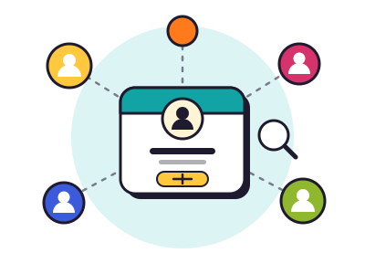
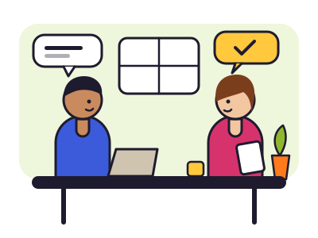

IDSelesai
MODUL 01
Digital Identity Foundation
Gmail profesional & Google Drive yang rapi.
100%
Design System · v1.0 · Tahap 2
Fondasi visual The Ultimate Job Application Pipeline: warna, tipografi, komponen, ilustrasi, dan gerak. Semua halaman LMS dibangun dari bagian-bagian di halaman ini.
01 · Warna
Kuning sinyal untuk aksi utama, tinta gelap untuk teks, dan cobalt untuk elemen interaktif. Kotak "Aa" menghitung kontras secara langsung (minimal AA = 4,5 : 1).
#FFC83DCTA utama, highlight, XP#1E1B2ETeks, outline, bayangan stiker#3B5BDBLink, fokus, status aktif#FBF7F0Latar halaman#FFFFFFKartu & panel (teks sekunder)#1F9D55 / #157A41Jawaban benar, modul selesai#E8A317 / #8A5A00Perlu follow-up, peringatan#E5484D / #C1272DJawaban salah, validasi gagal02 · Tipografi
Fraunces (serif lembut berkarakter) untuk judul & angka, Plus Jakarta Sans (karya desainer Indonesia) untuk bacaan, JetBrains Mono untuk label dan kode stasiun.
Kirim lamaran.
Identitas digital yang dipercaya HRD
Subjek email dalam 60 karakter
Follow-up tanpa terkesan memaksa
Rekruter rata-rata hanya membaca sebuah CV dalam hitungan detik. Karena itu, nama file, subjek email, dan kalimat pembuka harus langsung menjawab: siapa kamu dan posisi apa yang kamu lamar.
Lesson 2 dari 4· 6 menitTX
86%
1.240 XP
03 · Spasi, radius, bayangan
--s-1 · 4--s-2 · 8--s-3 · 12--s-4 · 16--s-5 · 24--s-6 · 32--s-7 · 48--s-8 · 64sm 10md 14lg 22xl 32pillsh-1sh-2sh-3sticker04 · Tombol
Tombol utama memakai bayangan stiker yang "tertekan" saat diklik. Semua tombol di bawah berfungsi.
05 · Input
Label selalu terlihat, petunjuk di bawah, pesan kesalahan spesifik. Coba kirim formulir kosong.
06 · Kartu modul & chip filter
Garis warna jalur, kode stasiun, status, dan progres dalam satu kartu. Chip di bawah benar-benar menyaring kartu.
Gmail profesional & Google Drive yang rapi.
CV ramah ATS & portofolio yang meyakinkan.

Strategi LinkedIn & riset perusahaan.

Seni mengirim email lamaran.
07 · Progres
Ubah nilai dengan tombol. Ring, bar, angka, peta jalur, dan indikator di topbar ikut bergerak.
Progres total
40%
8 dari 20 lesson selesai
Peta jalur
08 · Badge pencapaian
Identitas Siap
Modul 1 selesai
Senjata Lengkap
Modul 2 selesai
Jejaring Aktif
Modul 3 selesai
Pengirim Ulung
Modul 4 selesai
Pipeline Master
Semua modul selesai
09 · Checklist interaktif
0 dari 5 selesai
10 · Kartu kuis
11 · Modal & toast
12 · Completion state
Modul 01 · Selesai
Email profesional dan folder Drive sudah rapi. Stasiun berikutnya: menyusun CV dan portofolio.
13 · Ilustrasi
SVG buatan sendiri (bebas lisensi pihak ketiga): bentuk datar, outline tinta 3px, bayangan stiker, palet jalur. Tanpa logo merek.
14 · Sistem gerak
Durasi 120–700 ms, easing power3.out, hanya transform & opacity. Preferensi di bawah disimpan di perangkatmu dan berlaku di seluruh LMS.